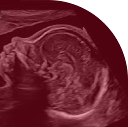

logo
Centre médical de la Femme


logo
Notre établissement moderne propose un accompagnement complet dans un environnement réconfortant.
Notre établissement moderne propose un accompagnement complet dans un environnement réconfortant.
Notre équipe de gynécologues hautement qualifiés et expérimentés.
Medecine généraliste
DU de gynécologie
Medecine généraliste
DU de gynécologie
Medecine généraliste
DU de gynécologie
Medecine généraliste
DU de gynécologie
Nous proposons des services allant des contrôles de routine à des traitements plus spécialisés, y compris les soins maternels, la contraception et la prise en charge de la ménopause.
Appelez notre cabinet ou passer par le service "……" de prise de rendez-vous en ligne.
Oui, nous collaborons avec diverses mutuelles. Veuillez contacter notre cabinet pour confirmer votre prise en charge.
Yes, our team can accommodate patients in both French and English.
Rejoignez notre newsletter pour recevoir des mises à jour exclusives sur
la santé des femmes, les actualités du cabinet et des offres
promotionnelles.
Ne manquez pas cela !